Gon Freecss
Sai da Ilha da Baleia para se tornar Hunter e encontrar seu pai.
Passe o cursor (ou toque) sobre um quadro para conhecer o personagem.
Sai da Ilha da Baleia para se tornar Hunter e encontrar seu pai.

Deixa para trás a vida de assassino e segue sua própria jornada ao lado de Gon.
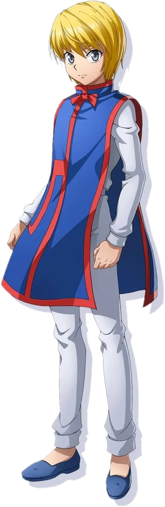
Busca recuperar os olhos escarlates do clã Kurta.

Quer se tornar médico e usa o Exame Hunter como caminho para realizar esse objetivo.
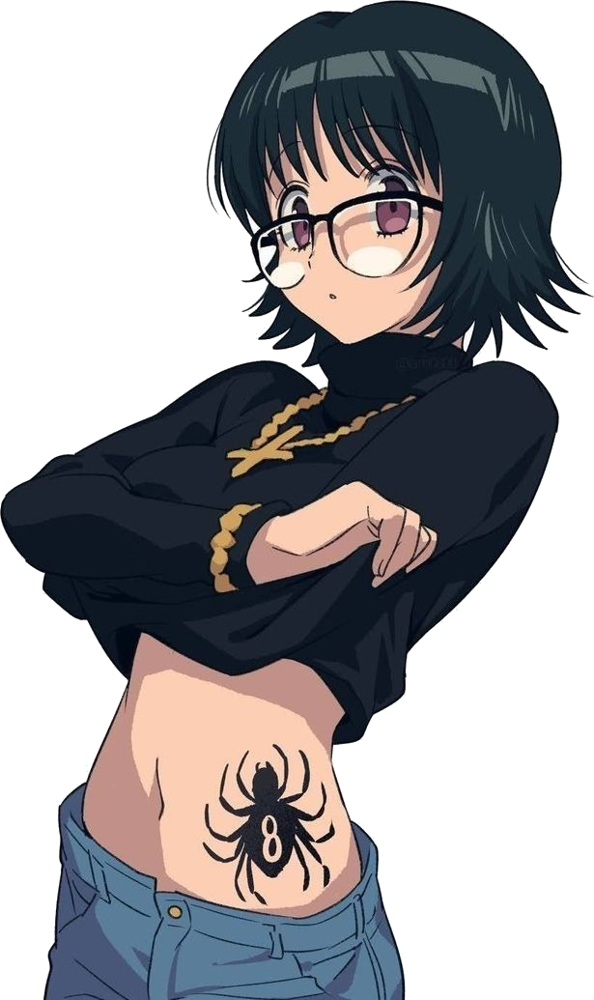
Integrante da Trupe Fantasma que materializa um aspirador para recolher objetos.
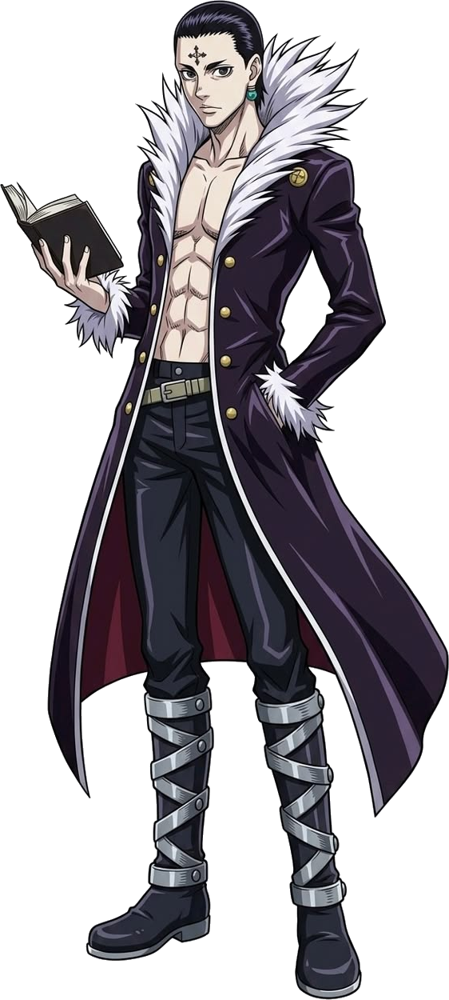
Líder da Trupe Fantasma. Seu livro de Nen permite usar habilidades que ele rouba de outras pessoas.
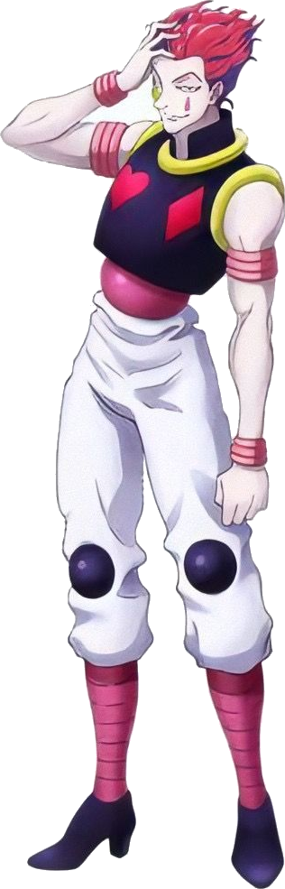
Procura adversários fortes e dá à própria aura propriedades elásticas e adesivas.
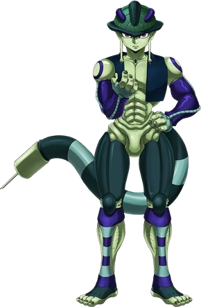
Rei das Formigas Quimera. Encontra em Komugi uma adversária à altura no jogo de Gungi.
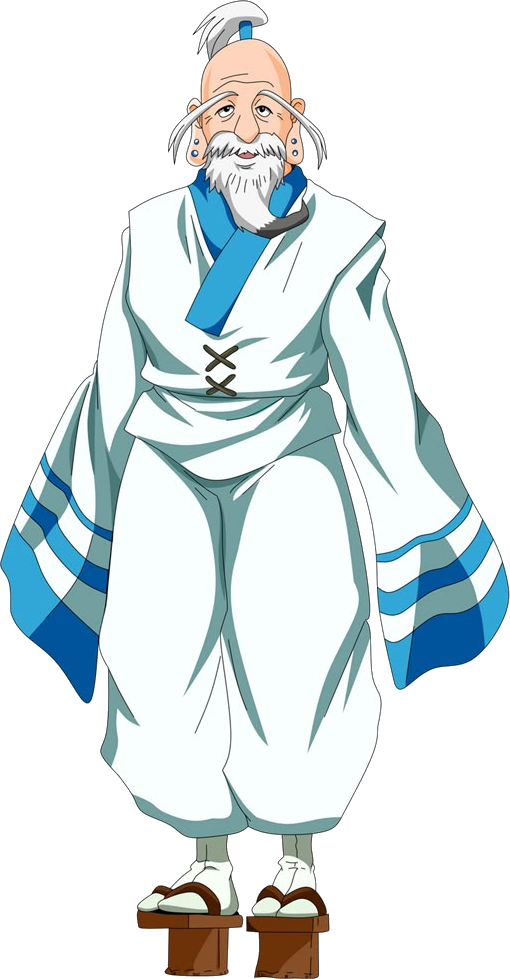
Presidente da Associação Hunter e mestre de artes marciais com décadas de treinamento em Nen.
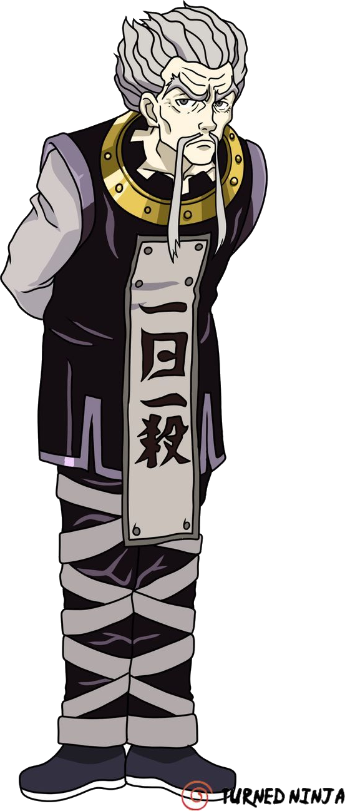
Avô de Killua e veterano da família Zoldyck, conhecido por dar forma de dragão à sua aura.
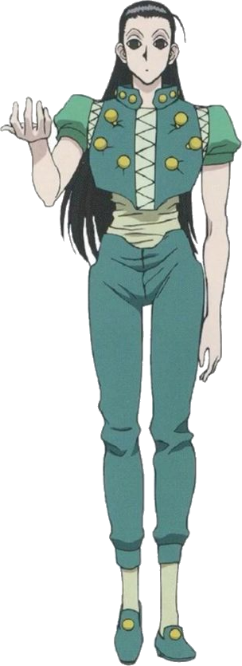
Irmão mais velho de Killua. Usa agulhas para manipular pessoas e alterar a própria aparência.
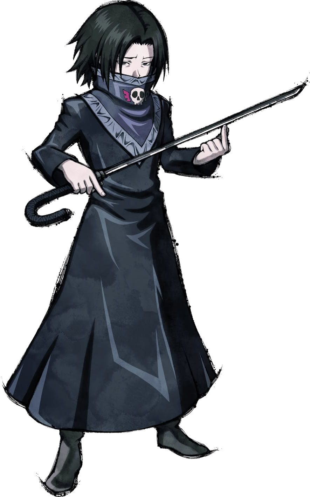
Integrante da Trupe Fantasma que luta com espada e pode converter a dor que sofre em calor intenso.
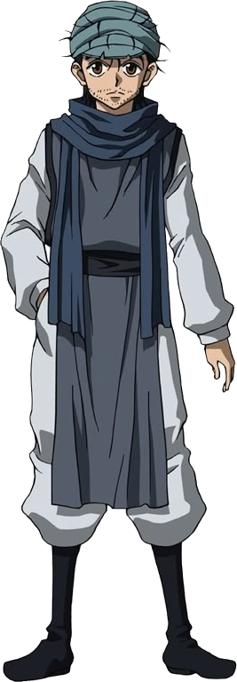
Pai de Gon e Hunter arqueólogo. A busca por ele leva Gon a deixar a Ilha da Baleia.
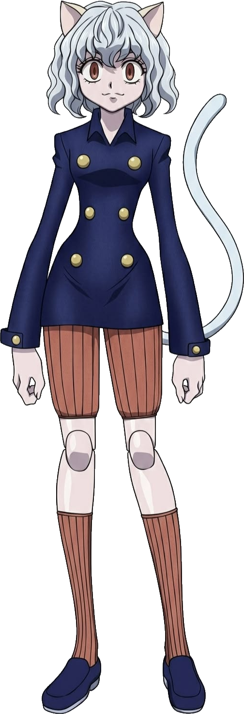
Integrante da Guarda Real de Meruem. Pode usar Nen para realizar cirurgias e controlar corpos.
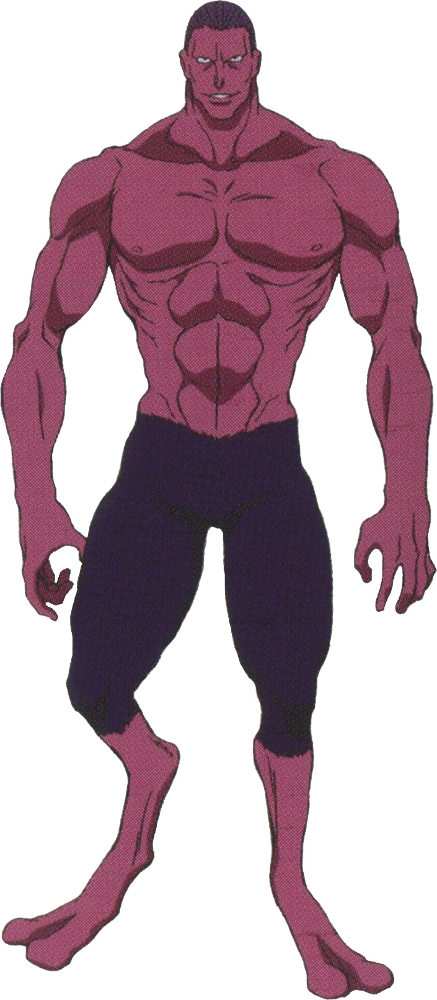
Conhecido como Youpi, integra a Guarda Real de Meruem e muda a forma do próprio corpo durante as lutas.
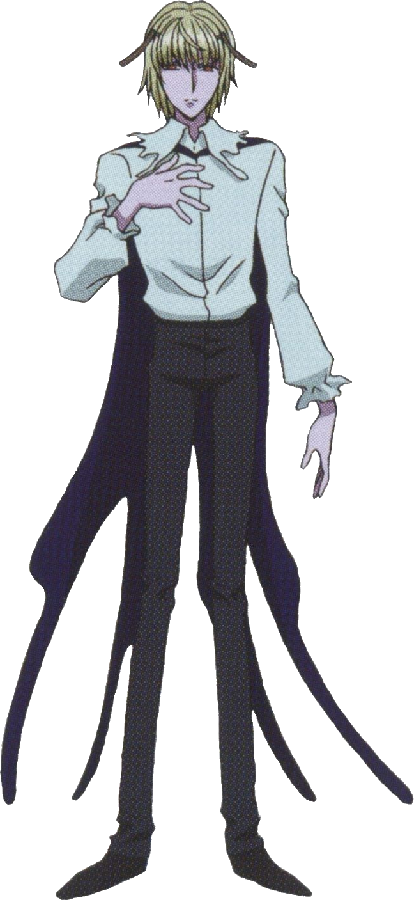
Integrante da Guarda Real de Meruem que espalha escamas de suas asas e pode dividir o corpo em cópias menores.
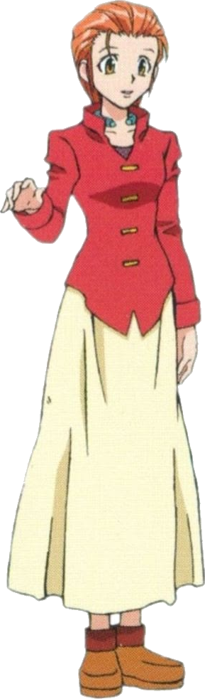
Criou Gon na Ilha da Baleia e o acompanhou até a partida para o Exame Hunter.
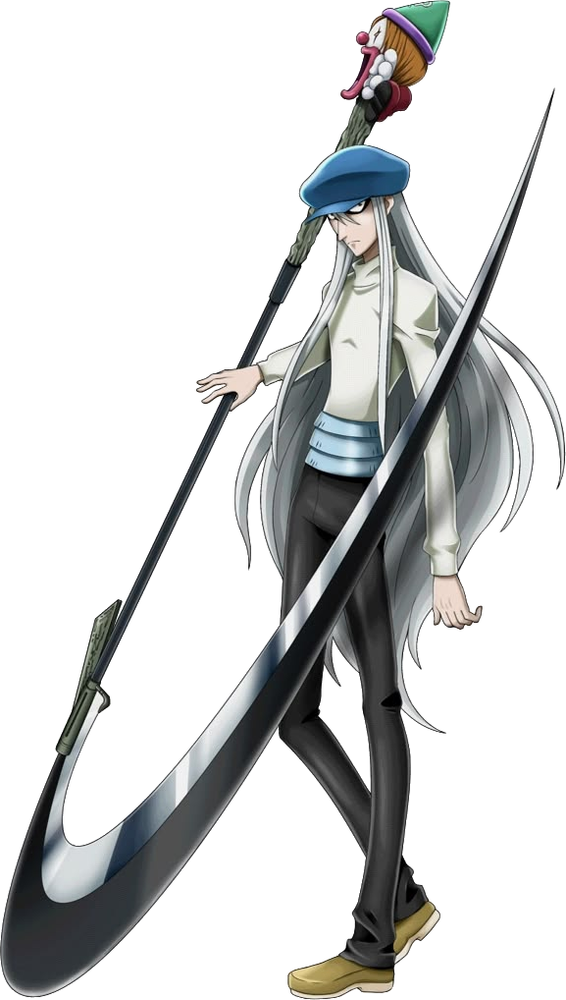
Discípulo de Ging que investiga as Formigas Quimera. Sua habilidade Crazy Slots sorteia a arma que ele pode usar.
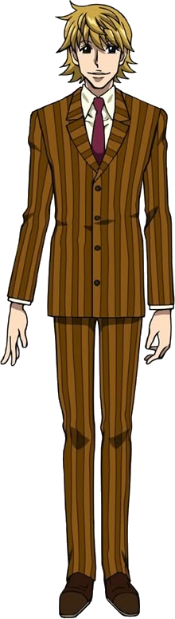
Vice-presidente da Associação Hunter na época de Netero e figura central na eleição para escolher seu sucessor.
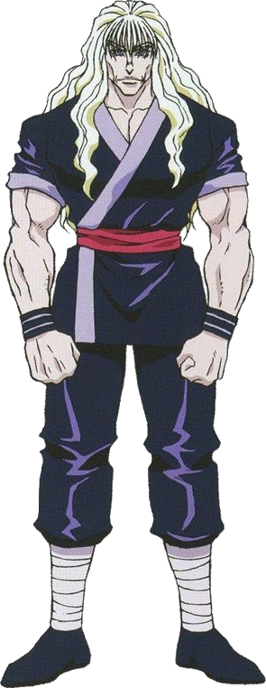
Pai de Killua e chefe da família Zoldyck. Atua como assassino ao lado de seu pai, Zeno.
As frases em destaque resumem a ideia de cada personagem; não são citações literais.